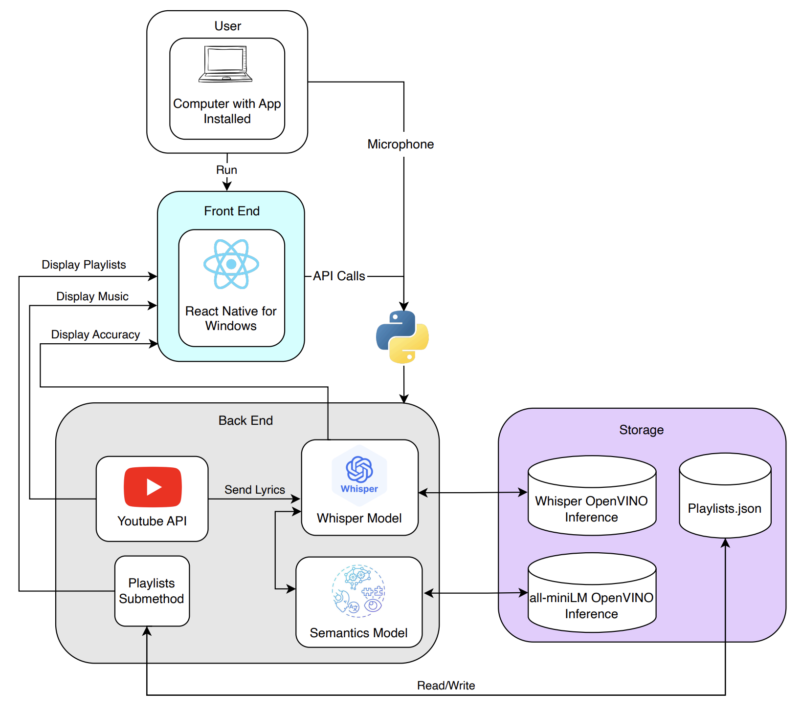
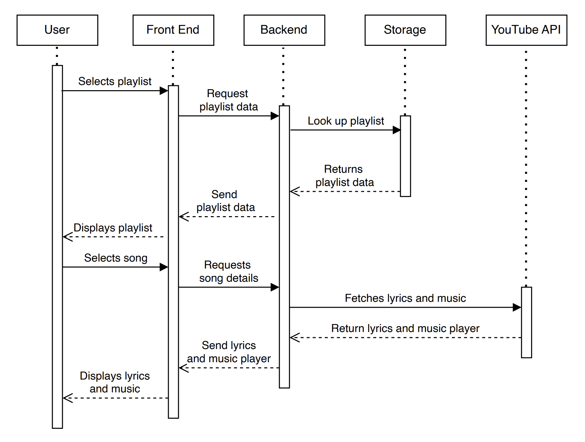
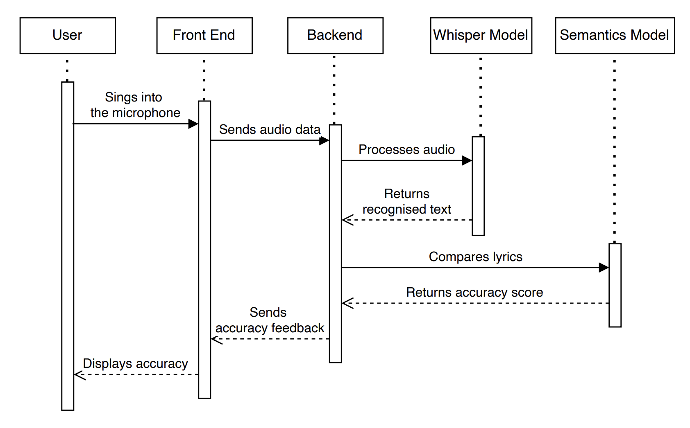

System Design
System Architecture Diagram
Overview of system components and their interactions

Sequence Diagrams
Key interaction flows within the system
Game Sequence Diagram

Audio Processing Diagram

Components and Workflow
Detailed explanation of system components and their interactions
User interacts with the game on a laptop with the application installed. They select playlists or songs, sing along, and receive real-time feedback.
Front End (React Native for Windows)
The Front End is responsible for displaying all of the game's components as well as invoking API calls to run the backend infrastructure:
- Has a YouTube embed that displays the music, and writes out the lyrics below the video player.
- Makes API calls to the back end that sends the input from the microphone to get analysed, then displays the output from the analysis in the form of real-time feedback and a score display using React UI elements.
- Has playlists and input boxes that provide a wide variety of music choice. These are curated by our team and placed in the playlist.json file in storage.
- Can dynamically change the matching threshold to make the program easier or harsher.
Back End
The Back End receives the audio input and analyses it to return a score:
- Two artificial intelligence models: one for transcribing audio input, one for matching the text to the lyrics. Both models are an OpenVINO inference which are optimised to run on Intel hardware.
- OpenAI's Whisper model, as an OpenVINO inference, transcribes the audio which is sent each sentence.
- All-miniLM then matches the semantics of the lyrics to the microphone input, which yields the most accurate but lenient results. This synergy achieves our goal of being lenient but still fair, outlined in the Requirements and the Research sections.
- Back end returns a binary signal that indicates whether a sentence achieved the matching threshold, which then displays the real-time feedback. When the song ends, the overall accuracy is returned as a more detailed form of feedback.
Packages and APIs
External dependencies and API specifications
Key Technologies
- OpenVINO: Specifically openvino_genai to optimise AI models.
- Uvicorn: To serve an API from the back end to the front end.
- React Native for Windows: To make a native and sleek UI.
- OpenAI's Whisper: For transcription.
- All-miniLM: For semantic matching.
- Youtube IFrame Player API: For playing music.